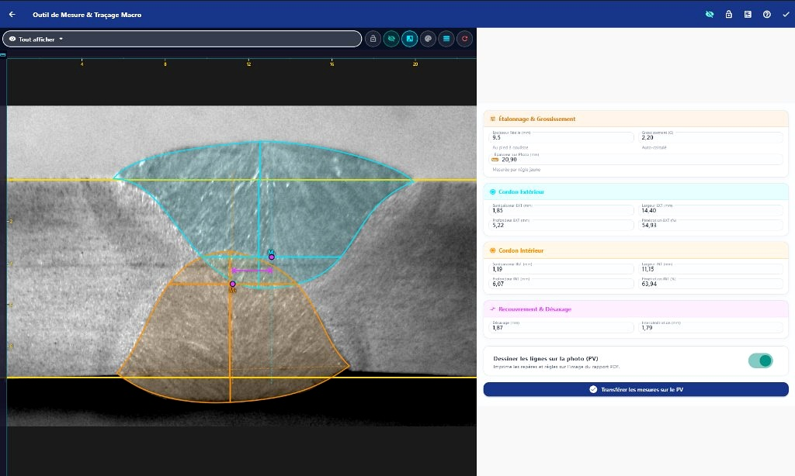

La rigueur du procès-verbal macrographique.
Traçabilité des soudures et calculs dimensionnels immédiats pour laboratoires d’essais mécaniques.


Modèle officiel de procès-verbal
Conforme ISO 15614-1 et API 5L.

Traçabilité intégrale de l’essai
Numéro de PV unique, dates, client et référence laboratoire.
Métal de base et géométrie
Nuance normée (API 5L PSL2), coulée, bobine et épaisseur mesurée.
Paramètres de soudage SAWH
WPS, PQR, ampérage, tension, vitesse d’avance et lot flux.
Cliché macrographique calibré
Insertion photo haute définition, cotations vectorielles et grossissement calculé.
Métrologie et 4 signatures
Surépaisseurs, pénétrations, désaxage et registre d’approbations officielles.
Poste de mesure instrumentale
Tracé vectoriel interactif et cotation dimensionnelle assistée par étalonnage.

Étalonnage optique immédiat
Calcul automatique du ratio pixel par millimètre pour une justesse garantie au centième.
Transfert direct sur le PV
Les cotes et clichés vectorisés sont injectés directement dans le rapport officiel.
Emblème technique du joint
Une identité forgée autour de la physique du joint soudé.
Double cordon sous flux (SAW)
Géométrie exacte de la passe supérieure externe en cyan et inférieure en ambre.
Réticule optique gradué
Anneau métrologique avec repères micrométriques de microscope optique.
Axes de désaxage M1 et M2
Cote centrale mesurant l’alignement des passes et l’interpénétration critique.
Console interactive directe
L’application tourne directement dans ce cadre pour tester le flux sans installation.
Distributions officielles disponibles
Fichiers exécutables complets et autonomes, sans dépendances externes.
Android
Paquet APK optimisé pour tablettes d’inspection et smartphones de contrôle.
Windows 64 bits
Installeur autonome pour postes de laboratoire sous Windows 10 et 11.
Accès Web Direct
Utilisable en plein écran sur n’importe quel navigateur Chrome, Edge ou Firefox.